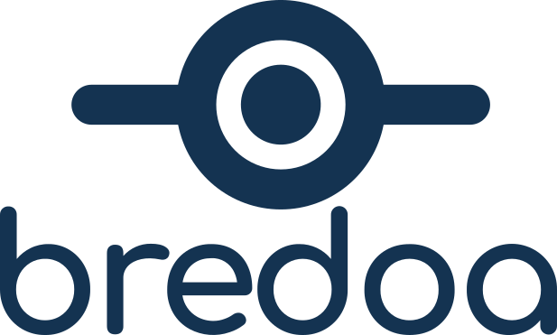

Objetos
Piezas, herramientas y mecanismos hechos para durar.

Manifiesto breve
Bredoa reúne proyectos que empiezan con una pregunta, siguen por las manos y terminan siendo algo que se puede usar, reparar o volver a pensar.
Piezas, herramientas y mecanismos hechos para durar.
Electrónica, software y procesos que ponen orden al movimiento.
Lo existente merece una segunda lectura antes de ser reemplazado.
Crear · restaurar · reinventar
Trabajo en curso